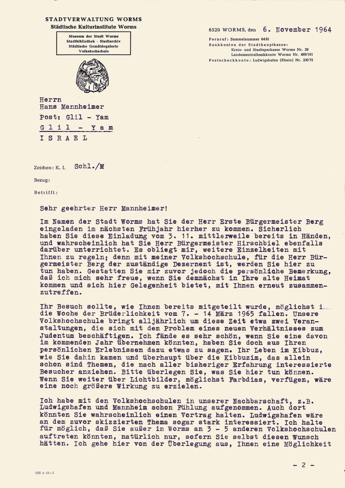

Blatt 1 — pp. 6
Städtische Kulturinstitute Worms · Volkshochschule
6520 Worms, den 6. November 1964
Herrn Hans Mannheimer, Post: Glil-Yam, ISRAEL
Sehr geehrter Herr Mannheimer!
Im Namen der Stadt Worms hat Sie der Herr Erste Bürgermeister Berg eingeladen, im nächsten Frühjahr hierher zu kommen. … Gestatten Sie mir zuvor jedoch die persönliche Bemerkung, daß ich mich sehr freue, wenn Sie demnächst in Ihre alte Heimat kommen und sich hier Gelegenheit bietet, mit Ihnen erneut zusammenzutreffen.
Ihr Besuch sollte … möglichst in die Woche der Brüderlichkeit vom 7.–14. März 1965 fallen. Unsere Volkshochschule bringt alljährlich … Veranstaltungen, die sich mit dem Problem eines neuen Verhältnisses zum Judentum beschäftigen. … Ihr Leben im Kibbuz, wie Sie dahin kamen … das allein schon sind Themen, die … interessierte Besucher anziehen.
In the name of the City of Worms, First Mayor Berg has invited you to come here next spring. … I am very glad that you will soon come to your old Heimat and that there is an opportunity to meet you again. Your visit should fall in the Week of Brotherhood, 7–14 March 1965 … your life in the kibbutz, how you came there … are subjects that draw interested audiences.
